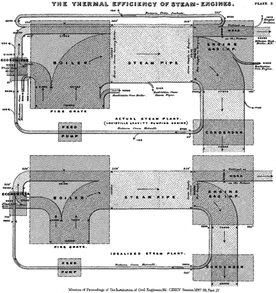

Sankey diagrams are a type of visualization best utilized to depict a flow or interconnection between multiple elements. The diagram is named after Matthew Sankey who popularized its use when visualizing the energy efficiency of the steam engine (seen below). In a Sankey diagram the width of the arrows shows the varying quantities which are flowing between the different elements. For example, in the steam engine diagram below, the loss of energy from the boiler is minimal when compared to the amount captured in the steam pipe and next the engine itself.

The diagram is most often used to demonstrate energy flows associated with electricity production, similar to its inception use. However, other recent uses have included the interconnected nature of different cities/countires politically. One interesting example was using a Sankey diagram to show the Internet sea cable bandwidth to represent maximum internet capacities in gigabits for different African nations (see below). Additonal examples of Sankey diagram visualizations can be found here.